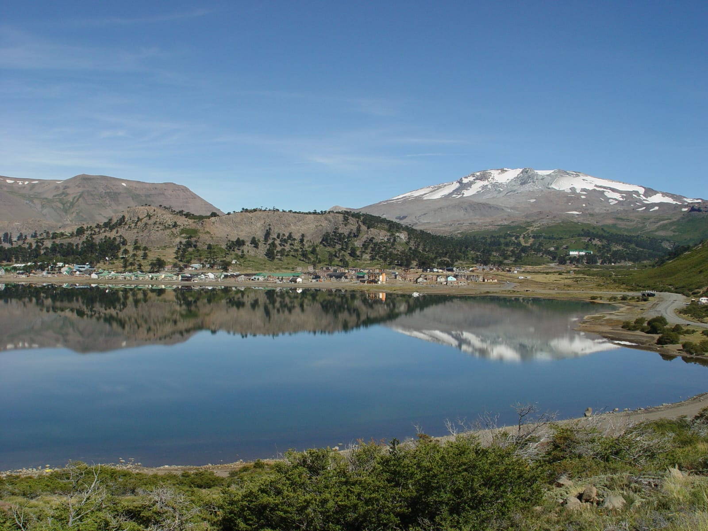
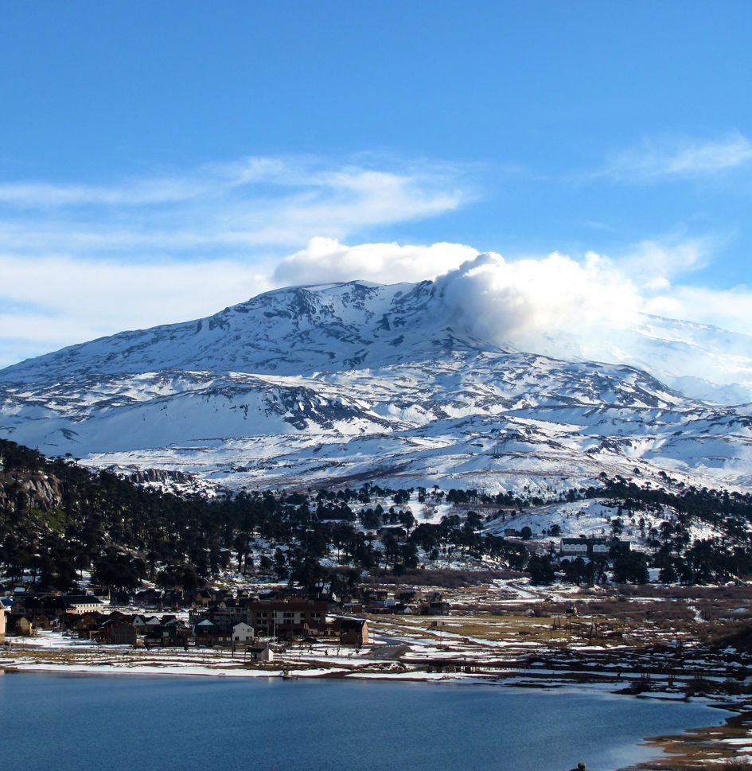
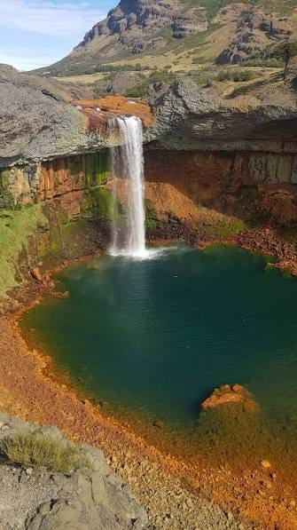
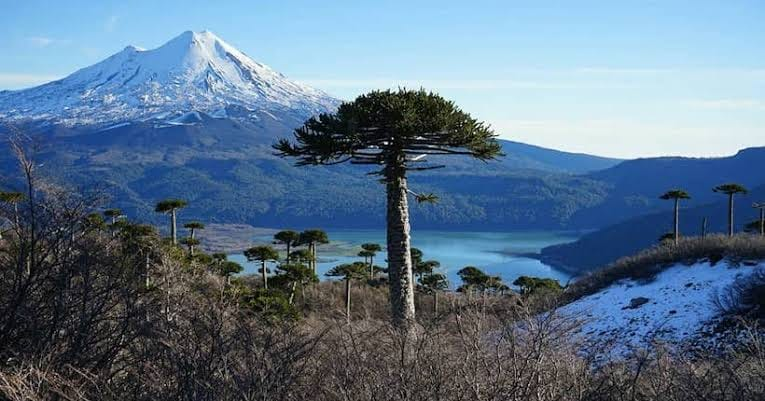
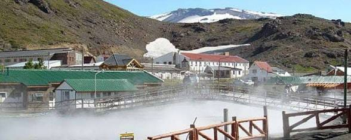
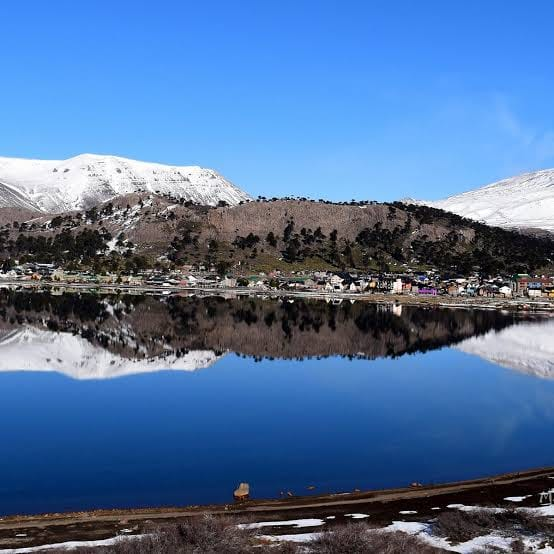

Naturaleza en estado puro
Descubrí nuestros lugares
Cada rincón tiene algo especial. Explorá los principales
atractivos naturales de la región y encontrá tu próxima
aventura.

Agua y montaña
Lago Caviahue
Un lago rodeado de montañas y bosques de araucarias,
ideal para disfrutar del paisaje, sacar fotografías
y conectarse con la naturaleza.
DESCUBRIR MÁS →

Paisajes volcánicos
Volcán Copahue
Un imponente paisaje de origen volcánico que forma
parte de la identidad de la región. Antes de visitarlo,
consultá las condiciones de acceso y seguridad.
DESCUBRIR MÁS →

Cascadas
Salto del Agrio
Una impresionante cascada entre formaciones rocosas
de colores intensos. Es uno de los paisajes más
conocidos y fotografiados de la zona.
DESCUBRIR MÁS →

Flora autóctona
Bosque de araucarias
Bosques de pehuenes, árboles emblemáticos de la
Patagonia, que crean un entorno natural ideal para
contemplar la biodiversidad del lugar.
DESCUBRIR MÁS →

Termas y bienestar
Copahue
Una localidad reconocida por sus aguas termales
y su entorno natural. Un destino para descansar,
conocer el paisaje y disfrutar del bienestar.
DESCUBRIR MÁS →

Aventura y nieve
Montañas de Caviahue
Montañas, nieve y panorámicas increíbles que cambian
con cada estación. Un entorno para disfrutar de
actividades al aire libre según la época del año.
DESCUBRIR MÁS →